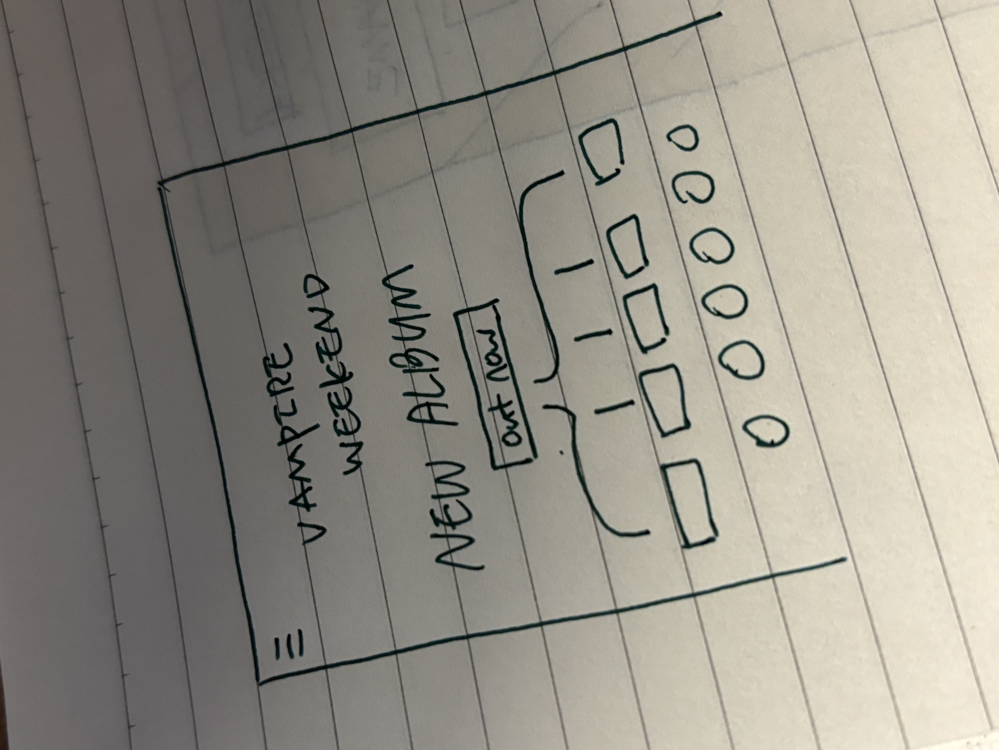

-
Using the favorite website you chose in homework 1, create a wireframe for one page of it using pen/paper, PowerPoint, or any your tool of choice. (use the 'img' tag!) Make sure to let us know what the name of your website is (Use the 'p' tag!)
vampire weekend website

-
Try to improve the website you've chosen, and create a redesigned wireframe of one page for the same website using the principles of visual hierarchy that you learned from the article.
This is mine!

-
What is the goal of the website? Who is it intended for? How does the design accomplish this? Write 2-3 sentences answering these questions. (Use the 'p' tag again!)
This website is created for the purpose of promoting a new album release. It also serves as a platform where visitors can enjoy and purchase Vampire Weekend's works. The key action, most importantly, is album playback by visitors. Therefore, we placed a button at the top to navigate to the page for enjoying the latest work, and we made the button's color different.
-
Write 2-3 sentences about what problems your redesign addressed, and how it solved them.
As there is a lot of information to provide, many buttons were needed for this website. However, when there are too many buttons on a website, it can lead to the dispersion of visitors' key actions. Therefore, it was necessary to differentiate the buttons by color to indicate their importance. Considering the user's key actions of music playback and album purchase, the buttons were arranged by distributing their importance, resulting in a much simpler design.
NOTE: Make sure to include the wireframe images in the website and don't just put it in your assets folder!
Your wireframes should look something like this: